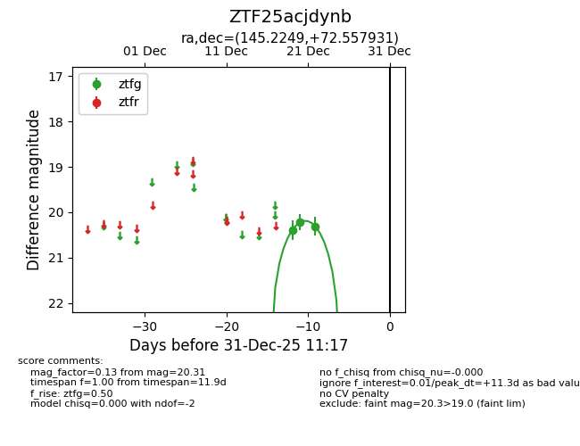
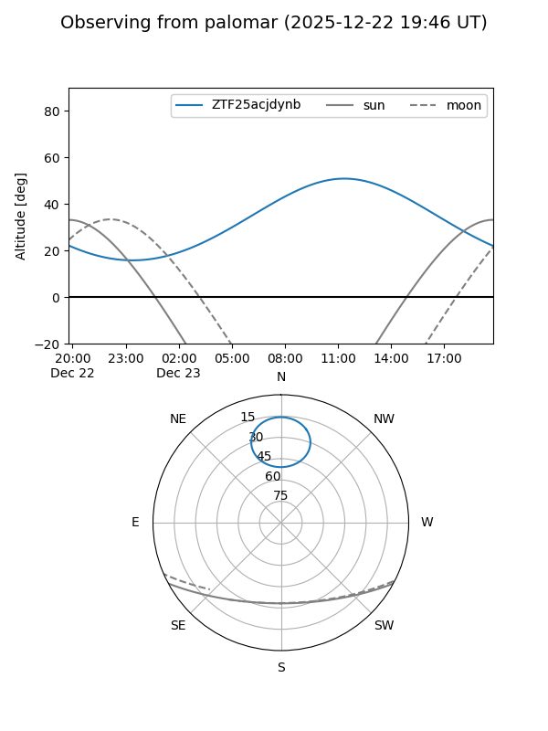
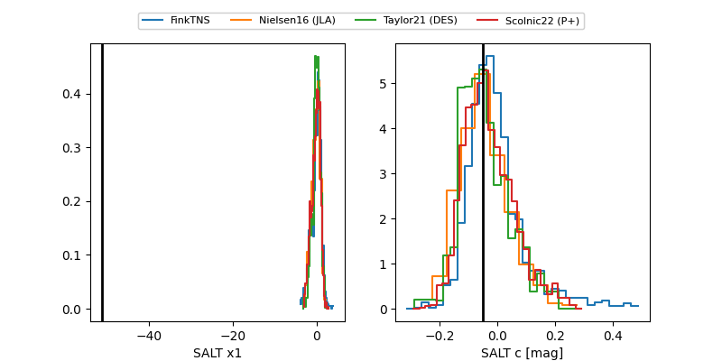

ZTF25acjdynb
Target ZTF25acjdynb at 2025-12-31 18:00
Aliases and brokers:
FINK: link
Lasair: link
ALeRCE: link
alt names
ZTF25acjdynb (ztf,fink_ztf)
Coordinates:
equatorial (ra, dec) = 145.2249,+72.55793
equatorial (HMS+DMS) = 09:40:53.98,+72:33:28.55
galactic (l, b) = (139.2400,+37.93594)
Flags:
Photometry:
last ztfg=20.31
3 ztfg detections
Lightcurve

Visibility


Additional plots
